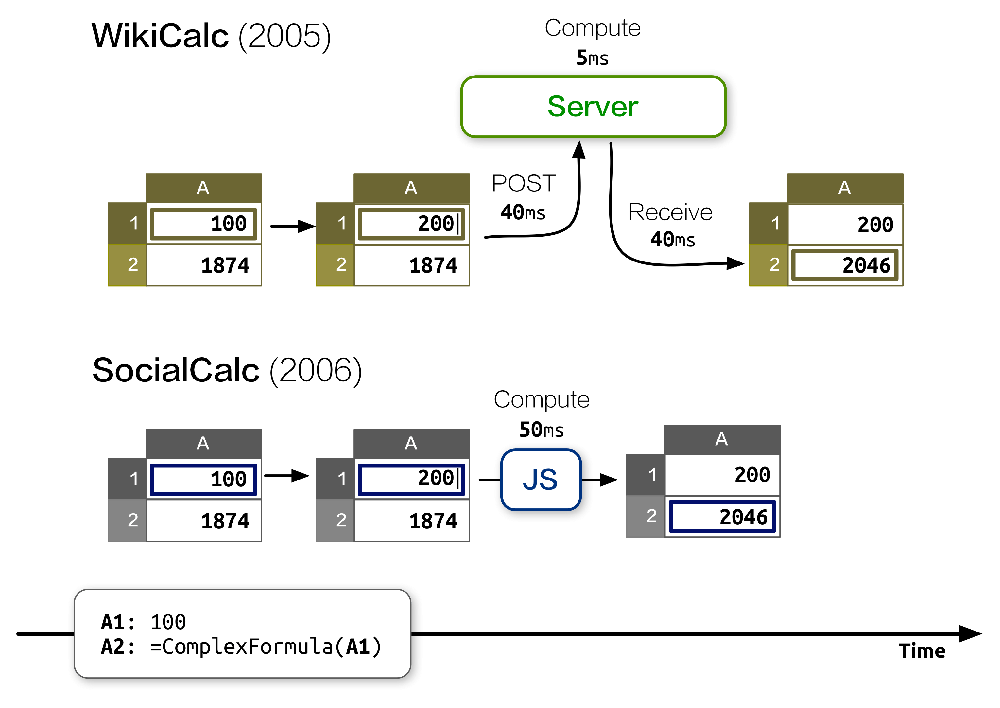
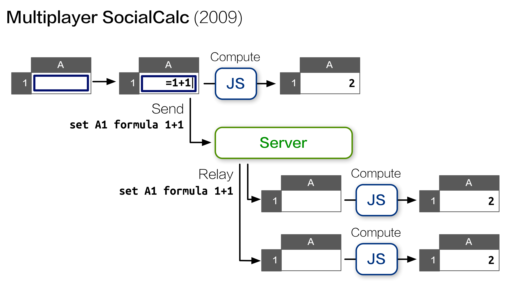
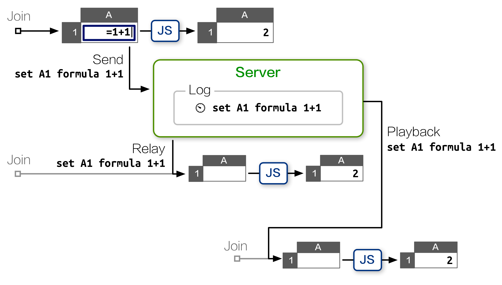
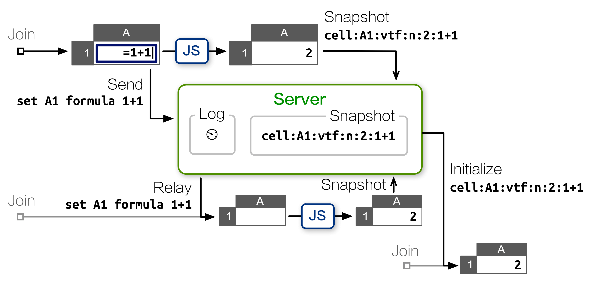
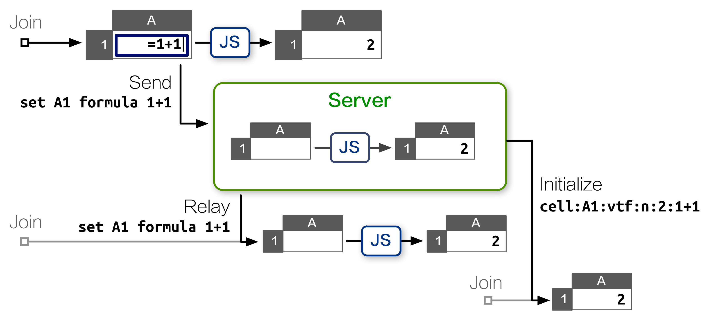
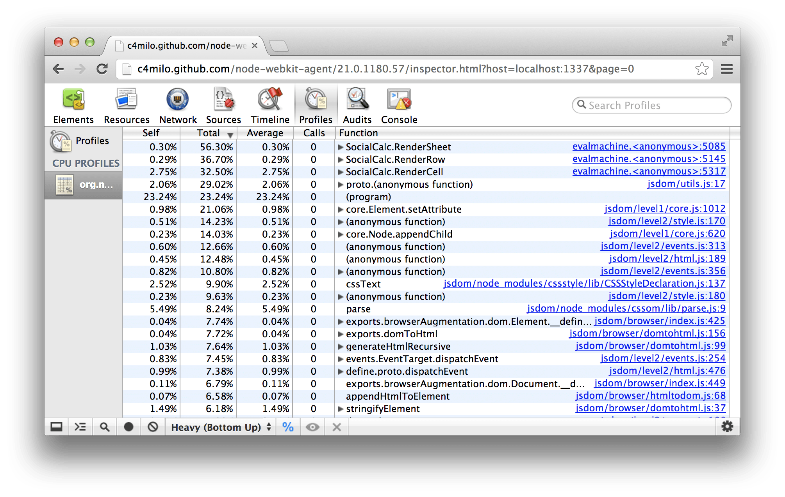
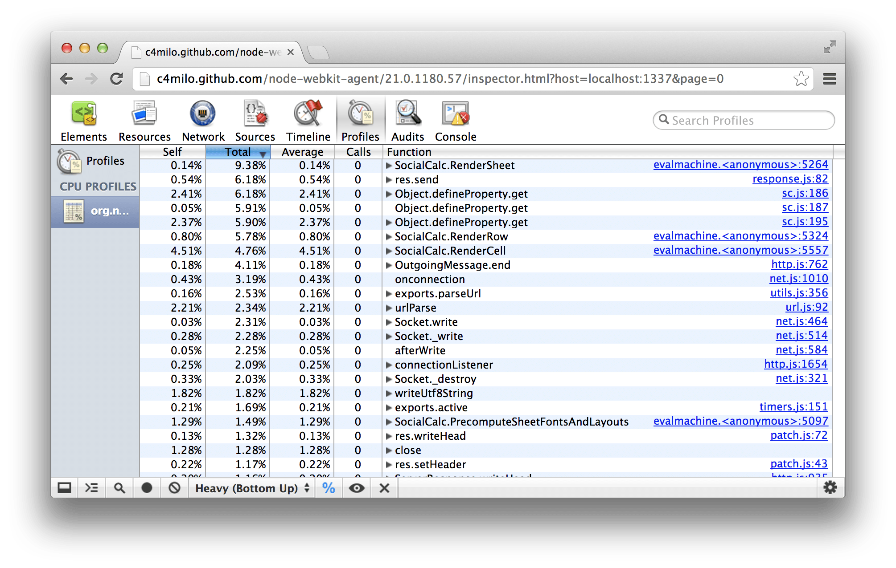
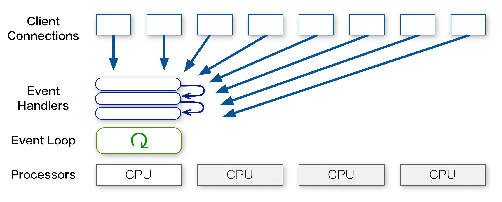
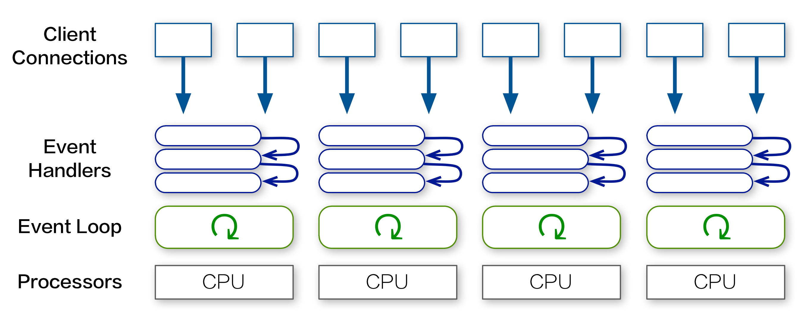
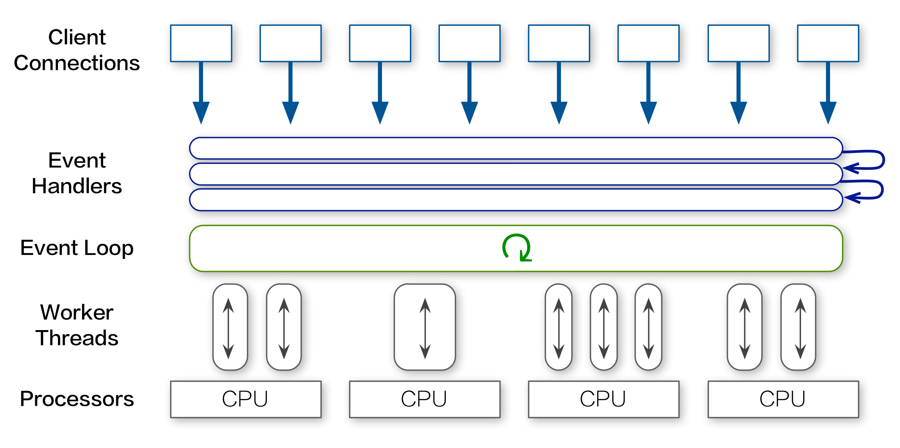

EtherCalc
EtherCalc is a web spreadsheet.
Your data is saved on the web, and people can edit the same document at the same time. Everybody's changes are instantly reflected on all screens.
Work together on inventories, survey forms, list management, brainstorming sessions and more!
Create Spreadsheet »
Terms of Service & Privacy Policy
EtherCalc is Free Software; it runs on GNU/Linux, FreeBSD, Mac OS X and Windows.
Please download and install Node.js, then enter the following command:
npm install ethercalc
./node_modules/ethercalc/bin/ethercalc
If you'd like to install for all users on a system, try sudo with npm install -g:
npm install -g ethercalc
ethercalc
If a Redis service is running on the same host, EtherCalc will prefer it over file-based storage to improve performance.
Installation instructions on the Sandstorm platform is available here.
We also provide a Docker package.
The history of spreadsheets spans more than 30 years. The first spreadsheet program, VisiCalc, was conceived by Dan Bricklin in 1978 and shipped in 1979. The original concept was quite straightforward: a table that spans infinitely in two dimensions, its cells populated with text, numbers, and formulas. Formulas are composed of normal arithmetic operators and various built-in functions, and each formula can use the current contents of other cells as values.
Although the metaphor was simple, it had many applications: accounting, inventory, and list management are just a few. The possibilities were practically limitless. All these uses made VisiCalc into the first "killer app" of the personal computer era.
In the decades that followed successors like Lotus 1-2-3 and Excel made incremental improvements, but the core metaphor stayed the same. Most spreadsheets were stored as on-disk files, and loaded into memory when opened for editing. Collaboration was particularly hard under the file-based model:
- Each user needed to install a version of the spreadsheet editor.
- E-mail ping-pong, shared folders, or setting up a dedicated version-control system all added bookkeeping overhead.
- Change tracking was limited; for example, Excel does not preserve history for formatting changes and cell comments.
- Updating formatting or formulas in templates required painstaking changes to existing spreadsheet files that used that template.
Fortunately, a new collaboration model emerged to address these issues with elegant simplicity. It is the wiki model, invented by Ward Cunningham in 1994, and popularized by Wikipedia in the early 2000s.
Instead of files, the wiki model features server-hosted pages, editable in the browser without requiring special software. Those hypertext pages can easily link to each other, and even include portions of other pages to form a larger page. All participants view and edit the latest version by default, with revision history automatically managed by the server.
Inspired by the wiki model, Dan Bricklin started working on WikiCalc in 2005. It aims to combine the authoring ease and multi-person editing of wikis with the familiar visual formatting and calculating metaphor of spreadsheets.
The first version of WikiCalc had several features that set it apart from other spreadsheets at the time:
- Plain text, HTML, and wiki-style markup rendering for text data.
- Wiki-style text that includes commands to insert links, images, and values from cell references.
- Formula cells may reference values of other WikiCalc pages hosted on other websites.
- Ability to create output to be embedded in other web pages, both static and live data.
- Cell formatting with access to CSS style attributes and CSS classes.
- Logging of all edit operations as an audit trail.
- Wiki-like retention of each new version of a page with roll-back capability.
WikiCalc 1.0's internal architecture and information flow were deliberately simple, but nevertheless powerful. The ability to compose a master spreadsheet from several smaller spreadsheets proved particularly handy. For example, imagine a scenario where each salesperson keeps numbers in a spreadsheet page. Each sales manager then rolls up their reps' numbers into a regional spreadsheet, and the VP of sales then rolls up the regional numbers into a top-level spreadsheet.
Each time one of the individual spreadsheets is updated, all the roll-up spreadsheets can reflect the update. If someone wants further detail, they simply click through to view the spreadsheet behind the spreadsheet. This roll-up capability eliminates the redundant and error-prone effort of updating numbers in multiple places, and ensures all views of the information stay fresh.

To ensure the recalculations are up-to-date, WikiCalc adopted a thin-client design, keeping all the state information on the server side. Each spreadsheet is represented on the browser as a <table> element; editing a cell will send an ajaxsetcell call to the server, and the server then tells the browser which cells need updating.

Unsurprisingly, this design depends on a fast connection between the browser and the server. When the latency is high, users will start to notice the frequent appearance of "Loading…" messages between updating a cell and seeing its new contents as shown below. This is especially a problem for users interactively editing formulas by tweaking the input and expecting to see results in real time.

Moreover, because the <table> element had the same dimensions as the spreadsheet, a 100×100 grid would create 10,000 <td> DOM objects, which strains the memory resource of browsers, further limiting the size of pages.
Due to these shortcomings, while WikiCalc was useful as a stand-alone server running on localhost, it was not very practical to embed as part of web-based content management systems.
In 2006, Dan Bricklin teamed up with Socialtext to start developing SocialCalc, a ground-up rewrite of WikiCalc in Javascript based on some of the original Perl code.
This rewrite was aimed at large, distributed collaborations, and sought to deliver a look and feel more like that of a desktop app. Other design goals included:
- Capable of handling hundreds of thousands of cells.
- Fast turnaround time for edit operations.
- Client-side audit trail and undo/redo stack.
- Better use of Javascript and CSS to provide full-fledged layout functionality.
- Cross-browser support, despite the more extensive use of responsive Javascript.
After three years of development and various beta releases, Socialtext released SocialCalc 1.0 in 2009, successfully meeting the design goals. Let's now take a look at the architecture of the SocialCalc system.
SocialCalc's main interface looks like this:

Its class diagram is as below:

Compared to WikiCalc, the server's role has been greatly reduced. Its only responsibility is responding to HTTP GETs by serving entire spreadsheets serialized in the save format; once the browser receives the data, all calculations, change tracking and user interaction are now implemented in Javascript.
The Javascript components were designed with a layered MVC (Model/View/Controller) style, with each class focusing on a single aspect:
- Sheet is the data model, representing an in-memory structure of a spreadsheet.
It contains a dictionary from coordinates to Cell objects, each representing a single cell. Empty cells need no entries, and hence consume no memory at all.
- Cell represents a cell's content and formats.
Some common properties are shown below:
datatype t
datavalue 1Q84
color black
bgcolor white
font italic bold 12pt Ubuntu
comment Ichi-Kyu-Hachi-Yon
RenderContext implements the view; it is responsible for rendering a sheet into DOM objects.
- TableControl is the main controller, accepting mouse and keyboard events.
As it receives view events such as scrolling and resizing, it updates its associated RenderContext object.
As it receives update events that affects the sheet's content, it schedules new commands to the sheet's command queue.
SpreadSheetControl is the top-level UI with toolbars, status bars, dialog boxes and color pickers.
- SpreadSheetViewer is an alternate top-level UI that provides a read-only interactive view.
We adopted a minimal class-based object system with simple composition/delegation, and make no use of inheritance or object prototypes. All symbols are placed under the SocialCalc.* namespace to avoid naming conflicts.
Each update on the sheet goes through the ScheduleSheetCommands
method, which takes a command string representing the edit.
The application embedding SocialCalc may define extra commands on their
own, by adding named callbacks into the
SocialCalc.SheetCommandInfo.CmdExtensionCallbacks object, and
use the startcmdextension command to invoke them. Some common commands are shown below:
set sheet defaultcolor blue
set A width 100
set A1 value n 42
set A2 text t Hello
set A3 formula A1*2
set A4 empty
set A5 bgcolor green
merge A1:B2
unmerge A1
erase A2
cut A3
paste A4
copy A5
sort A1:B9 A up B down
name define Foo A1:A5
name desc Foo Used in formulas like SUM(Foo)
name delete Foo
startcmdextension UserDefined args
Applciations embedding SocialCalc may define extra commands on their own, by adding named callbacks into the SocialCalc.SheetCommandInfo.CmdExtensionCallbacks object, and use the startcmdextension command to invoke them
To improve responsiveness, SocialCalc performs all recalculation and DOM updates in the background, so the user can keep making changes to several cells while the engine catches up on earlier changes in the command queue.
When a command is running, the TableEditor object sets its
busy flag to true; subsequent commands are then pushed into the
deferredCommands queue, ensuring a sequential order of
execution. The event loop looks like this:

As the diagram shows, the Sheet object keeps sending StatusCallback events to notify the user of the current state of command execution, through each of the four steps:
- ExecuteCommand
Sends cmdstart upon start, and
cmdend when the command finishes execution.
If the command
changed a cell's value indirectly, enter the Recalc step.
Otherwise, if the command changed the visual appearance of one or
more on-screen cells, enter the Render step.
If neither of
the above applies (for example with the copy command), skip
to the PositionCalculations step.
- Recalc (as needed)
Sends calcstart upon start,
calcorder every 100ms when checking the dependency chain of
cells, calccheckdone when the check finishes, and
calcfinished when all affected cells received their
re-calculated values.
This step is always followed by the Render step.
- Render (as needed)
Sends schedrender upon
start, and renderdone when the
<table> element is updated with
formatted cells.
This step is always followed by PositionCalculations.
- PositionCalculations
Sends schedposcalc upon
start, and doneposcalc after updating the scrollbars, the
current editable cell cursor, and other visual components of the
TableEditor.
Because all commands are saved as they are executed, we naturally get
an audit log of all operations. The Sheet.CreateAuditString
method provides a newline-delimited string as the audit trail, with
each command in a single line.
ExecuteSheetCommand also creates an undo command for each
command it executes. For example, if the cell A1 contains "Foo"
and the user executes set A1 text Bar, then an undo-command
set A1 text Foo is pushed to the undo stack. If the user
clicks Undo, then the undo-command is executed to restore A1 to its
original value.
Now let's look at the TableEditor layer. It calculates the on-screen
coordinates of its RenderContext, and manages
horizontal/vertical scroll bars through two TableControl
instances.

The view layer, handled by the RenderContext class, also
differs from WikiCalc's design. Instead of mapping each cell to a
<td> element, we now simply create a
fixed-size <table> that fits the
browser's visible area, and pre-populate it with
<td> elements.
As the user scrolls the spreadsheet through our custom-drawn scroll
bars, we dynamically update the innerHTML of the pre-drawn
<td> elements. This means we don't need to
create or destroy any <tr> or
<td> elements in many common cases,
which greatly speeds up response time.
Because RenderContext only renders the visible region, the size
of Sheet object can be arbitrarily large without affecting its
performance.
TableEditor also contains a CellHandles object, which
implements the radial fill/move/slide menu attached to the
bottom-right corner to the current editable cell, known as the ECell:

The input box is managed by two classes: InputBox and
InputEcho. The former manages the above-the-grid edit row,
while the latter shows an updated-as-you-type preview layer,
overlaying the ECell's content:

Usually, the SocialCalc engine only needs to communicate to the server
when opening a spreadsheet for edit, and when saving it back to
server. For this purpose, the Sheet.ParseSheetSave method
parses a save format string into a Sheet object, and the
Sheet.CreateSheetSave method serializes a Sheet object
back into the save format.
Formulas may refer to values from any remote spreadsheet with a URL.
The recalc command re-fetches the externally referenced
spreadsheets, parses them again with Sheet.ParseSheetSave, and
stores them in a cache so the user can refer to other cells in the
same remote spreadsheets without re-fetching its content.
The save format is in standard MIME multipart/mixed format,
consisting of four text/plain; charset=UTF-8 parts, each part
containing newline-delimited text with colon-delimited data fields.
The parts are:
- The
meta part lists the types of the other parts.
- The
sheet part lists each cell's format and content, each
column's width (if not default), the sheet's default format, followed
by a list of fonts, colors and borders used in the sheet.
- The optional
edit part saves the TableEditor's
edit state, including ECell's last position, as well as the fixed sizes of
row/column panes.
- The optional
audit part contains the history of
commands executed in the previous editing session.
For example, here is a spreadsheet with three
cells, with 1874 in A1 as the ECell, the formula 2^2*43
in A2, and the formula SUM(Foo) in A3 rendered in bold,
referring to the named range Foo over A1:A2.

The serialized save format for the spreadsheet looks like this:
socialcalc:version:1.0
MIME-Version: 1.0
Content-Type: multipart/mixed; boundary=SocialCalcSpreadsheetControlSave
--SocialCalcSpreadsheetControlSave
Content-type: text/plain; charset=UTF-8
# SocialCalc Spreadsheet Control Save
version:1.0
part:sheet
part:edit
part:audit
--SocialCalcSpreadsheetControlSave
Content-type: text/plain; charset=UTF-8
version:1.5
cell:A1:v:1874
cell:A2:vtf:n:172:2^2*43
cell:A3:vtf:n:2046:SUM(Foo):f:1
sheet:c:1:r:3
font:1:normal bold * *
name:FOO::A1\cA2
--SocialCalcSpreadsheetControlSave
Content-type: text/plain; charset=UTF-8
version:1.0
rowpane:0:1:14
colpane:0:1:16
ecell:A1
--SocialCalcSpreadsheetControlSave
Content-type: text/plain; charset=UTF-8
set A1 value n 1874
set A2 formula 2^2*43
name define Foo A1:A2
set A3 formula SUM(Foo)
--SocialCalcSpreadsheetControlSave--
This format is designed to be human-readable, as well as being
relatively easy to generate programmatically. This makes it possible
for Drupal's Sheetnode plugin to use PHP to convert
between this format and other popular spreadsheet formats, such as
Excel (.xls) and OpenDocument (.ods).
Now that we have a good idea about how the pieces in SocialCalc fit
together, let's look at two real-world examples of extending
SocialCalc.
The first example we'll look at is enhancing SocialCalc's text cells
with wiki markup to display its rich-text rendering right in the
table editor:

We added this feature to SocialCalc right after its 1.0 release, to
address the popular request of inserting images, links and text
markups using a unified syntax. Since Socialtext already has an
open-source wiki platform, it was natural to re-use the syntax for
SocialCalc as well.
To implement this, we need a custom renderer for the
textvalueformat of text-wiki, and to change the default
format for text cells to use it.
What is this textvalueformat, you ask? Read on.
In SocialCalc, each cell has a datatype and a valuetype.
Data cells with text or numbers correspond to text/numeric value
types, and formula cells with datatype="f" may generate either
numeric or text values.
Recall that on the Render step, the Sheet object generates HTML
from each of its cells. It does so by inspecting each cell's
valuetype: If it begins with t, then the cell's
textvalueformat attribute determines how generation is done.
If it begins with n, then the nontextvalueformat attribute is
used instead.
However, if the cell's textvalueformat or
nontextvalueformat attribute is not defined explicitly, then a
default format is looked up from its valuetype, as shown below:

Support for the text-wiki value format is coded in
SocialCalc.format_text_for_display:
if (SocialCalc.Callbacks.expand_wiki
&& /^text-wiki/.test(valueformat)
) {
// do general wiki markup
displayvalue = SocialCalc.Callbacks.expand_wiki(
displayvalue, sheetobj, linkstyle, valueformat
);
}
Instead of inlining the wiki-to-HTML expander in
format_text_for_display, we will define a new hook in
SocialCalc.Callbacks. This is the recommended style
throughout the SocialCalc codebase; it improves modularity by making
it possible to plug in different ways of expanding wikitext, as well
as keeping compatibility with embedders that do not desire this
feature.
Next, we'll make use of Wikiwyg, a
Javascript library offering two-way conversions between wikitext and
HTML.
We define the expand_wiki function by taking the cell's text,
running it through Wikiwyg's wikitext parser and its HTML emitter:
var parser = new Document.Parser.Wikitext();
var emitter = new Document.Emitter.HTML();
SocialCalc.Callbacks.expand_wiki = function(val) {
// Convert val from Wikitext to HTML
return parser.parse(val, emitter);
}
The final step involves scheduling the set sheet
defaulttextvalueformat text-wiki command right after the
spreadsheet initializes:
// Assume there's a <div id="tableeditor"/> in DOM
var spreadsheet = new SocialCalc.SpreadsheetControl();
spreadsheet.InitializeSpreadsheetControl(
"tableeditor", 0, 0, 0
);
spreadsheet.ExecuteCommand(
'set sheet defaulttextvalueformat text-wiki'
);
Taken together, the Render step now works like this:

That's all! The enhanced SocialCalc now supports a rich set of wiki
markup syntax:
*bold* _italic_ `monospace` {{unformatted}}
> indented text
* unordered list
# ordered list
"Hyperlink with label"<http://softwaregarden.com/>
{image: http://www.socialtext.com/images/logo.png}
Try entering *bold* _italic_ `monospace` in A1, and you'll
see it rendered as rich text:

The next example we'll explore is multi-user, real-time editing on a
shared spreadsheet. This may seem complicated at first, but thanks to
SocialCalc's modular design all it takes is for each on-line user to
broadcast their commands to other participants.
To distinguish between locally-issued commands and remote commands, we
add an isRemote parameter to the ScheduleSheetCommands
method:
SocialCalc.ScheduleSheetCommands =
function(sheet, cmdstr, saveundo, isRemote) {
if (SocialCalc.Callbacks.broadcast && !isRemote) {
SocialCalc.Callbacks.broadcast('execute', {
cmdstr: cmdstr,
saveundo: saveundo
});
}
// ...original ScheduleSheetCommands code here...
};
Now all we need to do is to define a suitable
SocialCalc.Callbacks.broadcast callback function. Once it's
in place, the same commands will be executed on all users connected
to the same spreadsheet.
When this feature was first implemented for OLPC by SEETA's Sugar Labs in 2009, the broadcast function was built with XPCOM calls into D-Bus/Telepathy, the standard transport for OLPC/Sugar networks:

That worked reasonably well, enabling XO instances in the same Sugar
network to collaborate on a common SocialCalc spreadsheet. However,
it is both specific to the Mozilla/XPCOM browser platform, as well as
to the D-Bus/Telepathy messaging platform.
Cross-browser Transport
To make this work across browsers and operating systems, we use the
Web::Hippie
framework, a high-level abstraction of JSON-over-WebSocket with
convenient jQuery bindings, with MXHR (multipart XMLHttpRequest)
as the fallback transport mechanism if WebSocket is not available.
For browsers with Adobe Flash plugin installed but without native
WebSocket support, we use the web_socket.jsweb_socket.js project's Flash emulation of WebSocket, which is often faster and more reliable
than MXHR.
The operation flow is shown below:

The client-side SocialCalc.Callbacks.broadcast function is
defined as:
var hpipe = new Hippie.Pipe();
SocialCalc.Callbacks.broadcast = function(type, data) {
hpipe.send({ type: type, data: data });
};
$(hpipe).bind("message.execute", function (e, d) {
var ss = SocialCalc.CurrentSpreadsheetControlObject;
ss.context.sheetobj.ScheduleSheetCommands(
d.data.cmdstr,
d.data.saveundo,
true // isRemote = true
);
break;
});
Although this works quite well, there are still two remaining issues
to resolve.
Conflict Resolution
The first one is a race-condition in the order of commands executed:
If users A and B simultaneously perform an operation affecting the
same cells, then receive and execute commands broadcast from the other
user, they will end up in different states:

We can resolve this with SocialCalc's built-in undo/redo mechanism, as shown in the diagram below:

The process used to resolve the conflict is as follows:
- When a client broadcasts a command, it adds the command to a Pending queue.
- When a client receives a command, it checks the remote command against the Pending queue:
- If the Pending queue is empty, then the command is simply executed as a remote action.
- If the command matches a command in the Pending queue, then the local command is removed from the queue.
- Otherwise, check if there are any queued commands that conflict with the received command:
- If there are conflicting commands, first perform an
Undo on those commands, and marks them for later Redo.
- After undoing all conflicting commands, execute the remote command as usual.
- When a marked-for-redo command is received from the server, execute it again, then remove it from the queue.
Remote Cursors
Even with race conditions resolved, it is still suboptimal to
accidentally overwrite the cell another user is currently editing. A
simple improvement is for each client to broadcast its cursor position
to other users, so everyone can see which cells are being worked on.
To implement this idea, we add another broadcast handler to the
MoveECellCallback event:
editor.MoveECellCallback.broadcast = function(e) {
hpipe.send({
type: 'ecell',
data: e.ecell.coord
});
};
$(hpipe).bind("message.ecell", function (e, d) {
var cr = SocialCalc.coordToCr(d.data);
var cell = SocialCalc.GetEditorCellElement(
editor, cr.row, cr.col
);
// ...decorate cell with styles specific
// to the remote user(s) on it...
});
To mark cell focus in spreadsheets, it's common to use colored
borders. However, a cell may already define its own border
property, and since border is mono-colored, it can only
represent one cursor on the same cell.
Therefore, on browsers with support for CSS3, we use the box-shadow
property to represent multiple peer cursors in the same cell:
/* Two cursors on the same cell */
box-shadow: inset 0 0 0 4px red, inset 0 0 0 2px green;
With four people editing on the same spreadsheet, the screen would look like this:

We delivered SocialCalc 1.0 on October 19th, 2009, the 30th
anniversary of the initial release of VisiCalc. The experience of
collaborating with my colleagues at Socialtext under Dan Bricklin's
guidance was very valuable to me, and I'd like to share some lessons
I learned during that time.
In his book The Design of Design, Fred Brooks argues that when building
complex systems, the conversation is much more direct if we focus on a
coherent design concept, rather than derivative
representations. According to Brooks, the formulation of such a
coherent design concept is best kept in a single person's mind:
Since conceptual integrity is the most important attribute of a
great design, and since that comes from one or a few minds working
uno animo, the wise manager boldly entrusts each design task to a
gifted chief designer.
In the case of SocialCalc, having Tracy Ruggles as our chief
user-experience designer was the key for the project to converge
toward a shared vision. Since the underlying SocialCalc engine was
so malleable, the temptation of feature creep was very real. Tracy's
ability to communicate using design sketches really helped us
present features in a way that feels intuitive to users.
Before I joined the SocialCalc project, there was already over two
years' worth of ongoing design and development, but I was able to
catch up and start contributing in less than a week, simply due to
the fact that everything is in the wiki. From the earliest
design notes to the most up-to-date browser support matrix, the
entire process was chronicled in wiki pages and SocialCalc
spreadsheets.
Reading through the project's workspace brought me quickly to the same
page as others, without the usual hand-holding overhead
typically associated with orienting a new team member.
This would not be possible in traditional open source projects, where
most conversation takes place on IRC and mailing lists and the wiki
(if present) is only used for documentations and links to development
resources. For a newcomer, it's much more difficult to reconstruct
context from unstructured IRC logs and mail archives.
David Heinemeier Hansson, creator of Ruby on Rails, once remarked on
the benefit of distributed teams when he first joined 37signals:
The seven time zones between Copenhagen and Chicago actually meant that
we got a lot done with few interruptions.
With nine time zones
between Taipei and Palo Alto, that was true for us during
SocialCalc's development as well.
We often completed an entire Design-Development-QA feedback cycle
within a 24-hour day, with each aspect taking one person's 8-hour
work day in their local daytime. This asynchronous style of
collaboration compelled us to produce self-descriptive artifacts
(design sketch, code and tests), which in turn greatly improved our
trust in each other.
In my 2006 keynote for the CONISLI conference -OFun: Optimizing for Fun, I summarized my experience leading a distributed team implementing the Perl 6 language into a few observations. Among them, Always
have a Roadmap, Forgiveness > Permission,
Remove deadlocks, Seek ideas, not consensus, and
Sketch ideas with code are particularly relevant for small
distributed teams.
When developing SocialCalc, we took great care in distributing
knowledge among team members with collaborative code ownership, so
nobody would become a critical bottleneck.
Furthermore, we pre-emptively resolved disputes by actually coding up
alternatives to explore the design space, and were not afraid of
replacing fully-working prototypes when a better design arrived.
These cultural traits helped us foster a sense of anticipation and
camaraderie despite the absence of face-to-face interaction, kept
politics to a minimum, and made working on SocialCalc a lot of fun.
Prior to joining Socialtext, I've advocated the "interleave tests
with the specification" approach, as can be seen in the Perl 6 specification, where
we annotate the language specification with the official test suite.
However, it was Ken Pier and Matt Heusser, the QA team for SocialCalc,
who really opened my eyes to how this can be taken to the next level,
bringing tests to the place of executable specification.
In Chapter 16 of Beautiful Testing, Matt explained our story-test driven development process as follows:
The basic unit of work is a "story," which is an extremely
lightweight requirements document.
A story contains a brief
description of a feature along with examples of what needs to happen
to consider the story completed; we call these examples "acceptance
tests" and describe them in plain English.
During the initial cut of the story, the product owner makes a
good-faith first attempt to create acceptance tests, which are
augmented by developers and testers before any developer writes
a line of code.
hese story tests are then translated into wikitests, a table-based
specification language inspired by
Ward Cunningham's FIT framework, which drives automated
testing frameworks such as Test::WWW::Mechanize and Test::WWW::Selenium.
It's hard to overstate the benefit of having story tests as a common
language to express and validate requirements. It was instrumental in
reducing misunderstanding, and has all but eliminated regressions from
our monthly releases.
Last but not least, the open source model we chose for SocialCalc
makes an interesting lesson in itself.
Socialtext created the Common Public Attribution License for
SocialCalc. Based on the Mozilla Public License, CPAL is designed to
allow the original author to require an attribution to be displayed
on the software's user interface, and has a network-use clause that
triggers share-alike provisions when derived work is hosted by a
service over the network.
After its approval by both the Open Source Initiative and the Free Software Foundation, we've seen prominent sites such as Facebook and Reddit opting to release
their platform's source code under the CPAL, which is very
encouraging.
Because CPAL is a "weak copyleft" license, developers can freely
combine it with either free or proprietary software, and only need to
release modifications to SocialCalc itself. This enabled various
communities to adopt SocialCalc and made it more awesome.
Examples from this chapter, including rich-text and collaborative editing, can be found on http://github.com/audreyt/ethercalc.
A historical archive of WikiCalc 1.0 is available on http://github.com/audreyt/wikicalc as well.
There are many interesting possibilities with this open-source
spreadsheet engine, and if you can find a way to embed SocialCalc
into your favorite project, we'd definitely love to hear about it.
Happy Hacking!
Audrey Tang
From SocialCalc to EtherCalc
Previously, in The Architecture of Open Source Applications, I described SocialCalc, an in-browser spreadsheet system that replaced the server-centric WikiCalc architecture. SocialCalc performs all of its computations in the browser; it uses the server only for loading and saving spreadsheets.
For the Socialtext team, performance was the primary goal behind SocialCalc's design in 2006. The key observation was this: Client-side computation in JavaScript, while an order of magnitude slower than server-side computation in Perl, was still much faster than the network latency incurred during AJAX roundtrips:

Toward the end of the AOSA chapter, we introduced simultaneous collaboration on spreadsheets, using a simple, chatroom-like architecture:

However, as we began to test it for production deployment, the performance and scalability characteristics fell short of practical use, motivating a series of system-wide rewrites in order to reach acceptable performance.
This chapter will discuss the revamped architecture we made for EtherCalc, a successor to SocialCalc optimized toward simultaneous editing. We'll see how we arrived at that architecture, how we used profiling tools, and how we made new tools to overcome performance problems.
Design Constraints
The Socialtext platform has both behind-the-firewall and in-the-cloud deployment options, imposing unique constraints on EtherCalc's resource and performance requirements. At the time of this writing, Socialtext requires 2 CPU cores and 4GB RAM for vSphere-based intranet hosting; a typical dedicated EC2 instance provides about twice that capacity, with 4 cores and 7.5GB of RAM.
Deploying on intranets means that we can't simply throw hardware at the problem in the same way multi-tenant, hosted-only systems did (e.g., DocVerse, which later became part of Google Docs); we can assume only a modest amount of server capacity.
Compared to intranet deployments, cloud-hosted instances offer better capacity and on-demand extension, but network connections from browsers are usually slower and fraught with frequent disconnections and reconnections.
To recap, constraints on these resources shaped EtherCalc's architecture directions:
Memory: An event-based server allows us to scale to thousands of concurrent connections with a small amount of RAM.
CPU: Based on SocialCalc's original design, we offload most computations and all content rendering to client-side JavaScript.
Network: By sending spreadsheet operations, instead of spreadsheet content, we reduce bandwidth use and allow recovering over unreliable network connections.
Initial Prototype
We started with a WebSocket server implemented in Perl 5, backed by Feersum, a libev-based non-blocking web server developed at Socialtext. Feersum is very fast, capable of handling over 10k requests per second on a single CPU.
On top of Feersum, we use the PocketIO middleware to leverage the popular Socket.io JavaScript client, which provides backward compatibility for legacy browsers without WebSocket support.
The initial prototype closely resembles a chat server. Each collaborative session is a chatroom; clients sends their locally executed commands and cursor movements to the server, which relays them to all other clients in the same room.
A typical flow of operation looks like this:

Each command is logged on the server with a timestamp. If a client drops and reconnects, it can resume by asking for a log of all requests since it was disconnected, then replay those commands locally to get to the same state as its peers.
As we described in the AOSA chapter, this simple design minimized server-side CPU and RAM requirements, and demonstrates reasonable resiliency against network failure.
First Bottleneck
When the prototype was put to field testing in June 2011, we quickly discovered a performance problem with long-running sessions.
Spreadsheets are long-lived documents, and a collaborative session can accumulate thousands of modifications over weeks of editing.
Under the naive backlog model, when a client joins such an edit session, it must replay thousands of commands, incurring a significant startup delay before it can make any modifications.
To mitigate this issue, we implemented a snapshot mechanism. After every 100 commands sent to a room, the server will poll the states from each active client, and save the latest snapshot it receives next to the backlog. A freshly joined client receives the snapshot along with new commands entered after the snapshot was taken, so it only needs to replay 99 commands at most.

This workaround solved the CPU issue for new clients, but created a network performance problem of its own, as it taxes each client's upload bandwidth. Over a slow connection, this delays the reception of subsequent commands from the client.
Moreover, the server has no way to validate the consistency of snapshots submitted by clients. Therefore, an erroneous -- or malicious -- snapshot can corrupt the state for all newcomers, placing them out of sync with existing peers.
An astute reader may note that both problems are caused by the server's inability to execute spreadsheet commands. If the server can update its own state as it receives each command, it would not need to maintain a command backlog at all.
The in-browser SocialCalc engine is written in JavaScript. We considered translating that logic into Perl, but that carries the steep cost of maintaining two codebases going forward. We also experimented with embedded JS engines (V8, SpiderMonkey), but they imposed their own performance penalties when running inside Feersum's event loop.
Finally, by August 2011, we resolved to rewrite the server in Node.js.
Porting to Node.js
The initial rewrite went smoothly, because both Feersum and Node.js are based on the same libev event model, and Pocket.io's API matches Socket.io closely.
It took us only an afternoon to code up a functionally equivalent server in just 80 lines of code, thanks to the concise API offered by ZappaJS.
Initial micro-benchmarking showed that porting to Node.js costed us about one half of maximum throughput: On a typical Core i5 CPU in 2011, the original Feersum+Tatsumaki stack handles 5k request per second, while Node.js+Express maxes out at 2.8k requests.
This performance degradation was acceptable for our first JavaScript port, as it wouldn't significantly increase latency for users, and we expect that it will improve over time.
Subsequently, we continued the work to reduce client-side CPU use and minimize bandwidth use by tracking each session's ongoing state with server-side SocialCalc spreadsheets:

Server-side SocialCalc
The key enabling technology for our work is jsdom, a full implementation of the W3C document object model, which enables Node.js to load client-side JavaScript libraries within a simulated browser environment.
Using jsdom, it's trivial to create any number of server-side SocialCalc spreadsheets, each taking about 30kb of RAM, running in its own sandbox:
require! <[ vm jsdom ]>
create-spreadsheet = ->
document = jsdom.jsdom \<html><body/></html>
sandbox = vm.createContext window: document.createWindow! <<< {
setTimeout, clearTimeout, alert: console.log
}
vm.runInContext """
#packed-SocialCalc-js-code
window.ss = new SocialCalc.SpreadsheetControl
""" sandbox
Each collaboration session corresponds to a sandboxed SocialCalc controller, executing commands as they arrive. The server then transmits this up-to-date controller state to newly joined clients, removing the need for backlogs altogether.
Satisfied with benchmarking results, we coded up a Redis-based persistence layer and launched EtherCalc.org for public beta testing. For the next six months, it scaled remarkably well, performing millions of spreadsheet operations without a single incident.
In April 2012, after delivering a talk on EtherCalc at the OSDC.tw conference, I was invited by Trend Micro to participate in their hackathon, adapting EtherCalc into a programmable visualization engine for their real-time web traffic monitoring system.
For their use case, we created REST APIs for accessing individual cells with GET/PUT as well as POSTing commands directly to a spreadsheet. During the hackathon, the brand-new REST handler received hundreds of calls per second, updating graphs and formula cell contents on the browser without any hint of slowdown or memory leaks.
However, at the end-of-day demo, as we piped traffic data into EtherCalc and started to type formulas into the in-browser spreadsheet, the server suddenly locked up, freezing all active connections. We restarted the Node.js process, only to find it consuming 100% CPU, locking up again soon after.
Flabbergasted, we rolled back to a smaller data set, which did work correctly and allowed us to finish the demo. But I wondered: What caused the lock-up in the first place?
Profiling Node.js
To find out where those CPU cycles went to, we need a profiler.
Profiling the initial Perl prototype had been very straightforward, thanks largely to the illustrious NYTProf profiler, which provides per-function, per-line, per-opcode and per-block timing information, with detailed call-graph visualization and HTML reports. In addition to NYTProf, we also traced long-running processes with Perl's built-in DTrace support, obtaining real-time statistics on function entry and exit.
In contrast, Node.js's profiling tools leave much to be desired. As of this writing, DTrace support is still limited to illumos-based systems in 32-bit mode, so we mostly relied on the Node Webkit Agent, which provides an accessible profiling interface, albeit with only function-level statistics.
A typical profiling session looks like this:
# "lsc" is the LiveScript compiler
# Load WebKit agent, then run app.js:
lsc -r webkit-devtools-agent -er ./app.js
# In another terminal tab, launch the profiler:
killall -USR2 node
# Open this URL in a WebKit browser to start profiling:
open http://tinyurl.com/node0-8-agent
To recreate the heavy background load, we performed high-concurrency REST API calls with ab. For simulating browser-side operations, such as moving cursors and updating formulas, we used Zombie.js, a headless browser, also built with jsdom and Node.js.
Ironically, the bottleneck turns out to be in jsdom itself:

From the report above, we can see that RenderSheet dominates the CPU use: Each time the server receives a command, it spends a few microseconds to redraw the innerHTML of cells to reflect the effect of the command.
Because all jsdom code run in a single thread, subsequent REST API calls are blocked until the previous command's rendering completes. Under high concurrency, this queue eventually triggered a latent bug that ultimately resulted in server lock-up.
As we scrutinized the heap usage, we saw that the rendered result is all but unreferenced, as we don't really need a real-time HTML display on the server side. The only reference to it is in the HTML export API, and for that we can always reconstruct each cell's innerHTML rendering from the spreadsheet's in-memory structure.
So, we removed jsdom from the RenderSheet function, re-implemented a minimal DOM in 20 lines of LiveScript for HTML export, then ran the profiler again:

Much better! We have improved throughput by a factor of 4, HTML exporting is 20 times faster, and the lock-up problem is gone.
Multi-Core Scaling
After this round of improvement, we finally felt comfortable enough to integrate EtherCalc into the Socialtext platform, providing simultaneous editing for wiki pages and spreadsheets alike.
To ensure a fair response time on production environments, we deployed a reverse-proxying nginx server, using its limit_req directive to put an upper limit on the rate of API calls. This technique proved satisfactory for both behind-the-firewall and dedicated-instance hosting scenarios.
For small and medium-sized enterprise customers, though, Socialtext provides a third deployment option: Multi-tenant hosting. A single, large server hosts more than 35,000 companies, each averaging around 100 users.
In this multi-tenant scenario, the rate limit is shared by all customers making REST API calls. This makes each client's effective limit much more constraining -- around 5 requests per second. As noted in the previous section, this limitation is caused by Node.js using only one CPU for all its computation:

Is there a way to make use of all those spare CPUs in the multi-tenant server?
For other Node.js services running on multi-core hosts, we utilized a pre-forking cluster server that creates a process for each CPU:

However, while EtherCalc does support multi-server scaling with Redis, the interplay of Socket.io clustering with RedisStore in a single server would have massively complicated the logic, making debugging much more difficult.
Moreover, if all processes in the cluster are tied in CPU-bound processing, subsequent connections would still get blocked.
Instead of pre-forking a fixed number of processes, we sought a way to create one background thread for each server-side spreadsheet, thereby distributing the work of command execution among all CPU cores:

For our purpose, the W3C Web Worker API is a perfect match. Originally intended for browsers, it defines a way to run scripts in the background independently. This allows long tasks to be executed continuously while keeping the main thread responsive.
So we created webworker-threads, a cross-platform implementation of the Web Worker API for Node.js.
Using webworker-threads, it's very straightforward to create a new SocialCalc thread and communicate with it:
{ Worker } = require \webworker-threads
w = new Worker \packed-SocialCalc.js
w.onmessage = (event) -> ...
w.postMessage command
This solution offers the best of both worlds: It gives us the freedom to allocate more CPUs to EtherCalc whenever needed, and the overhead of background thread creation remains negligible on single-CPU environments.
Lessons Learned
Unlike the SocialCalc project's well-defined specification and team development process, EtherCalc was a solo experiment from mid-2011 to late-2012 and served as a proving ground for assessing Node.js' readiness for production use.
This unconstrained freedom afforded an exciting opportunity to try all sorts of alternative languages, libraries, algorithms and architectures. Here, I'd like to share a few lessons I've learned during this 18-month experiment.
Constraints are Liberating
In his book The Design of Design, Fred Brooks argues that by shrinking the designer's search space, constraints can help to focus and expedite a design process. This includes self-imposed constraints:
Artificial constraints for one's design task have the nice property that one is free to relax them. Ideally, they push one into an unexplored corner of a design space, stimulating creativity.
During EtherCalc's development, such constraints were essential to maintain its conceptual integrity throughout various iterations.
For example, it might seem attractive to adopt three different concurrency architectures, each tailored to one of our server flavors (intranet, internet, and multi-tenant hosting). However, such premature optimization would have severely hampered the conceptual integrity.
Instead, I kept the focus on getting EtherCalc performing well without trading off one resource requirement for another, thereby minimizing its CPU, RAM and network uses at the same time. Indeed, since the RAM requirement is under 100MB, even embedded platforms, such as Raspberry Pi, can host it easily.
This self-imposed constraint made it possible to deploy EtherCalc on PaaS environments (e.g. DotCloud, Nodejitsu and Heroku) where all three resources are constrained instead of just one. This made it very easy for people to set up a personal spreadsheet service, thus prompting more contributions from independent integrators.
Worst is Best
At the YAPC::NA 2006 conference in Chicago, I was invited to predict the open-source landscape, and this was my entry:
I think, but I cannot prove, that next year JavaScript 2.0 will bootstrap itself, complete self-hosting, compile back to JavaScript 1, and replace Ruby as the Next Big Thing on all environments.
I think CPAN and JSAN will merge; JavaScript will become the common backend for all dynamic languages, so you can write Perl to run in the browser, on the server, and inside databases, all with the same set of development tools.
Because, as we know, Worse is better, so the worst scripting language is doomed to become the best.
The vision turned into reality around 2009 with the advent of new JavaScript engines running at the speed of native machine instructions. By 2012, JavaScript has become a "write once, run anywhere" virtual machine; other major languages, including Perl, can be compiled to it.
In addition to browsers on the client side and Node.js on the server, JavaScript also made headway into the Postgres database with freely reusable modules shared by all three runtime environments.
What enabled such sudden growth for the community? During the course of EtherCalc's development, from participating in the fledgling NPM community, I reckoned that it was precisely because JavaScript prescribes very little and bends itself to the various uses, so innovators can focus on the vocabulary and idioms (e.g., jQuery and Node.js), each team abstracting their own Good Parts from a common, liberal core.
New users are offered a very simple subset to begin with; experienced developers are presented with the challenge to evolve better conventions from existing ones. Instead of relying on a core team of designers to get a complete language right for all anticipated uses, the grassroots development of JavaScript echoes Richard P. Gabriel's well-known concept of Worse is Better.
LiveScript, Redux
In contrast to the straightforward Perl syntax of Coro::AnyEvent, the callback-based API of Node.js necessitates deeply nested functions that are difficult to reuse.
After experimenting with various flow-control libraries, I finally solved this issue by settling on LiveScript, a new language that compiles to JavaScript, with syntax heavily inspired by Haskell and Perl.
In fact, EtherCalc was ported through a lineage of four languages: JavaScript, CoffeeScript, Coco and LiveScript. Each iteration brings more expressivity, while maintaining full back- and forward compatibility, thanks to efforts such as js2coffee and js2ls.
Because LiveScript compiles to JavaScript rather than interprets its own bytecode, it takes full advantage of modern native runtimes and remains completely compatible with function-scoped profilers.
LiveScript eliminated nested callbacks with novel constructs, such as backcalls and cascades; it provides us with powerful syntactic tools for functional and object-oriented composition.
When I first encountered LiveScript, I remarked that it's like "a smaller language within Perl 6, struggling to get out..." -- a goal made much easier by focusing strictly on syntactical ergonomics and assuming the same JavaScript semantics.
Freedom Zero
The Free Software Foundation maintains there are four criteria of software freedom. The most basic one, termed Freedom 0, is simply "the freedom to run the program, for any purpose."
In the 20th century, both open-source and proprietary software afforded this freedom, so much so that we almost took it for granted until cloud computing came along.
Hosting data on shared servers is not a new idea. Remote storage services had a history almost as long as the Internet itself, and they generally worked well with ever-improving transport and encryption technologies to guard against data loss and tampering.
However, by the turn of the century, remote storage became increasingly tightly coupled with remote computing and communication. Once we offload computation to a server, it's no longer possible to run the program for any purpose. Rather, the service operator dictates its purpose, holding the power to inspect and censor user data without notice.
Hence, in addition to the well-known importance of having local access to the source code of services we rely on, it's also important to compute only on servers we trust. To serve this purpose, EtherCalc is designed to be easily installable, so it can always run from your own computer.
For the SocialCalc spreadsheet engine, Socialtext designed the Common Public Attribution License. By enabling users to request a copy of the original JavaScript source code they're running from server operators, we encouraged operators to contribute back their code.
As for the server-side code of EtherCalc, I have dedicated it into the public domain to encourage integration with content hosting systems, so anybody can set up a collaborative spreadsheet easily. Many people have indeed done so, and you're welcome to join us, too!